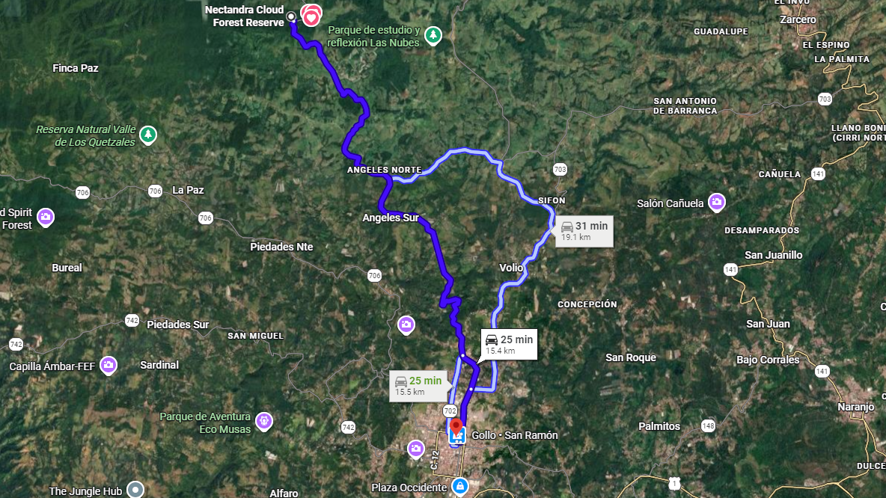
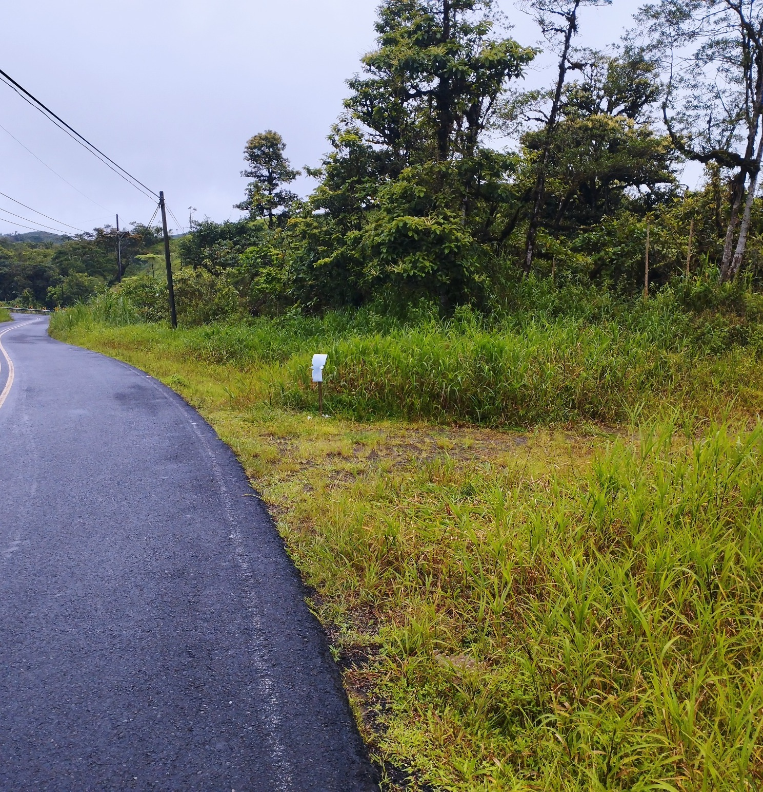

01
Agua propia
Pozo de 17 m, tanque de 1.100 L, filtrado UV, dos nacientes y captación de lluvia independiente.
San Ramón · Alajuela
43.050 m² con vista al Volcán Arenal, casa lista para habitar, agua propia y acceso por calle pública.
Vista desde la propiedad
Precio de oferta ₡115.000.000
La propiedad
A unos 25 minutos del centro de San Ramón, la finca combina áreas abiertas aprovechables con la cercanía inmediata del bosque nuboso de Nectandra.

Ubicación privilegiada
La propiedad tiene acceso directo por calle pública asfaltada. La casa se encuentra en la parte alta, rodeada de paisaje, privacidad y vistas abiertas.
Abrir ubicación exacta en WazeInformación completa
Su valor nace de la combinación de ubicación, paisaje, autonomía, servicios disponibles y potencial para proyectos de bienestar o turismo de naturaleza.

43.050 m²Terreno total
₡115 millonesPrecio de oferta
Calle públicaAcceso directo
Agua propiaPozo y 2 nacientes
Ubicación y acceso
La ruta de referencia recorre aproximadamente 15,5 km por la Ruta 702, continúa hacia Ángeles Norte y sigue rumbo a Bajo los Rodríguez. La finca se encuentra frente a Nectandra Cloud Forest Reserve.


Lista para disfrutar
Dos dormitorios, sala comedor, cocina, baño, bodega amplia y corredores exteriores. Una base cómoda para vivir la finca desde el primer día.


Interior de la vivienda
La casa cuenta con sala comedor, cocina, dos dormitorios, baño y una bodega amplia. Tiene pisos cerámicos, cielos de madera y PVC, buena entrada de luz natural y ventanas hacia el paisaje.


DormitoriosEl principal tiene ventana al paisaje y calentador a gas. El segundo cuenta con piso cerámico, cielo de madera y vista verde.
BañoEnchape cerámico en paredes y piso, ducha instalada y ventana alta para iluminación y ventilación.
BodegaEspacio amplio para herramientas, insumos o taller ligero, con piso de cemento y una zona técnica asociada al sistema solar.
Autonomía
La finca mantiene su carácter natural sin renunciar a agua potable, energía, internet y supervisión remota.
Pozo de 17 m, tanque de 1.100 L, filtrado UV, dos nacientes y captación de lluvia independiente.

Sistema de 3 kW con seis paneles, inversor y baterías. La red del ICE está disponible frente a la propiedad.

Starlink instalado y cámaras inteligentes para supervisar la propiedad a distancia.
Agua y resiliencia
El pozo propio tiene 17 metros de profundidad y un análisis bacteriológico potable disponible. El sistema almacena el agua en un tanque de 1.100 litros y la trata mediante filtrado y luz ultravioleta.
La finca también posee dos nacientes y un sistema independiente para captar agua de lluvia.


Energía
Seis paneles solares instalados en el techo alimentan el equipo de control, el inversor y las baterías. La red eléctrica se encuentra disponible frente a la propiedad.
La solución solar se eligió por autonomía, estética y menor impacto visual, evitando llevar cableado visible hasta la vivienda.
Bienestar y naturaleza
Senderos, árboles maduros, musgos y helechos crean espacios íntimos para caminar, leer o simplemente escuchar el bosque.
El terreno también ofrece posibilidades para jardines, huerta, cabañas de bajo impacto o un futuro proyecto acuícola sujeto a diseño técnico.


El entorno funciona para meditación, lectura, descanso y caminatas suaves. La vegetación incluye musgos, helechos y árboles maduros.
La finca puede apoyar una propuesta de retiro, yoga, bienestar o cabañas de bajo impacto, sujeta a los permisos y estudios correspondientes.

Potencial productivo
La propiedad cuenta con una excavación realizada con la intención de evaluar un proyecto para cría de truchas. El clima fresco de montaña puede resultar favorable para su análisis.
El área puede integrarse con senderos, un jardín productivo o un proyecto de finca autosuficiente. Requiere diseño técnico y acondicionamiento antes de presentarse como infraestructura operativa.
Base registral y catastral
La documentación completa se comparte durante la revisión formal del comprador.

La consulta registral actualizada al 6 de septiembre de 2026 identifica una propiedad en Ángeles de San Ramón con 43.050 m² y colindancia oeste con calle pública.
Datos de la propiedad
Recorrido en video
Reproduzca el video para apreciar el terreno, el entorno de montaña y la experiencia de recorrer la propiedad.

Precio de oferta
₡115.000.000
Coordine una visita para recorrer la casa, las nacientes, los sistemas de agua y energía y las áreas con potencial de desarrollo.